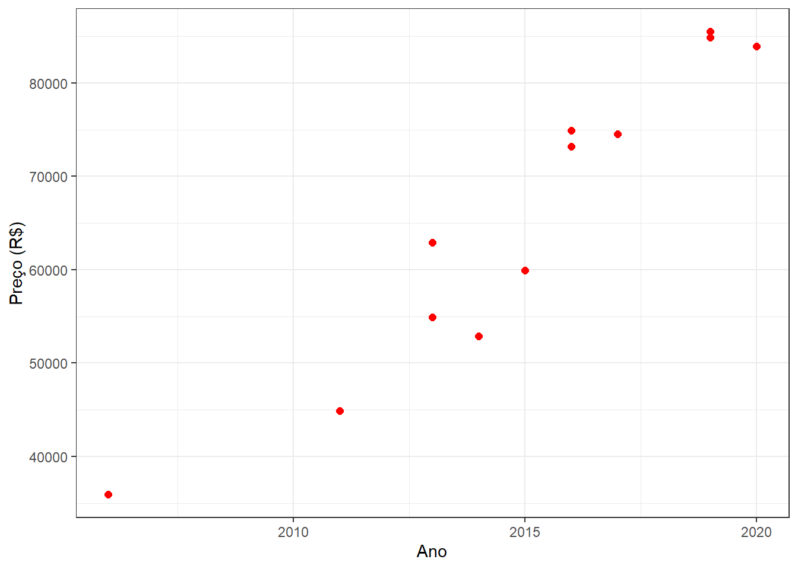
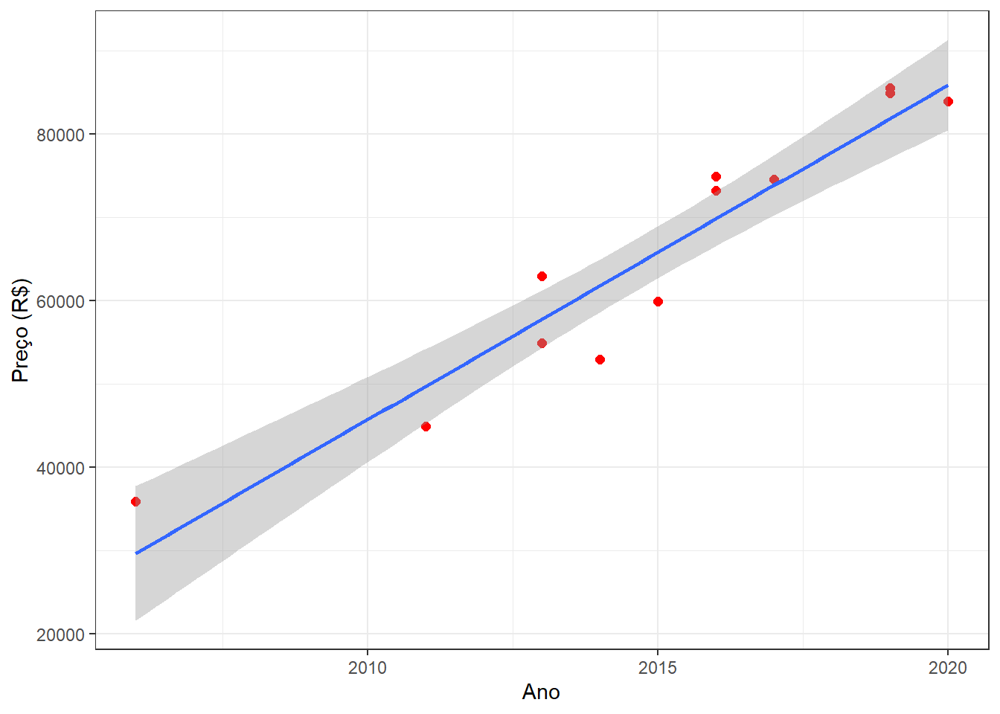
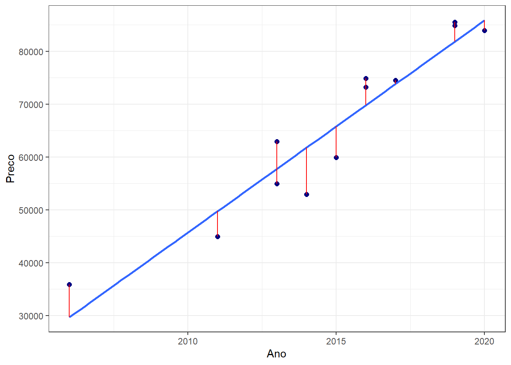
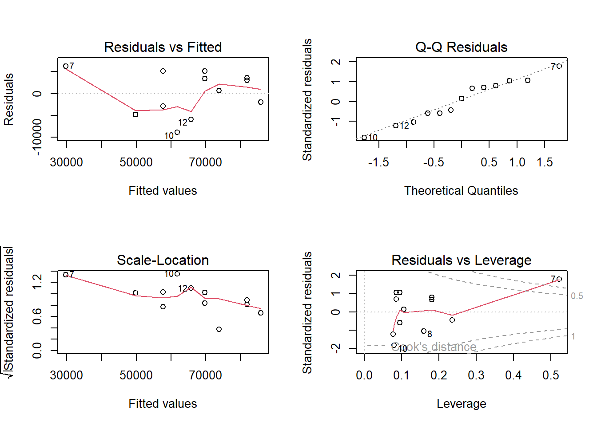
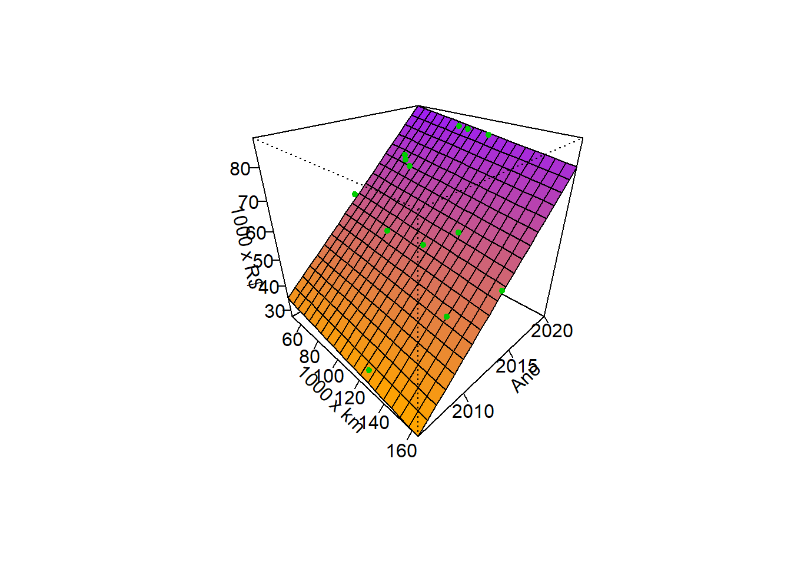
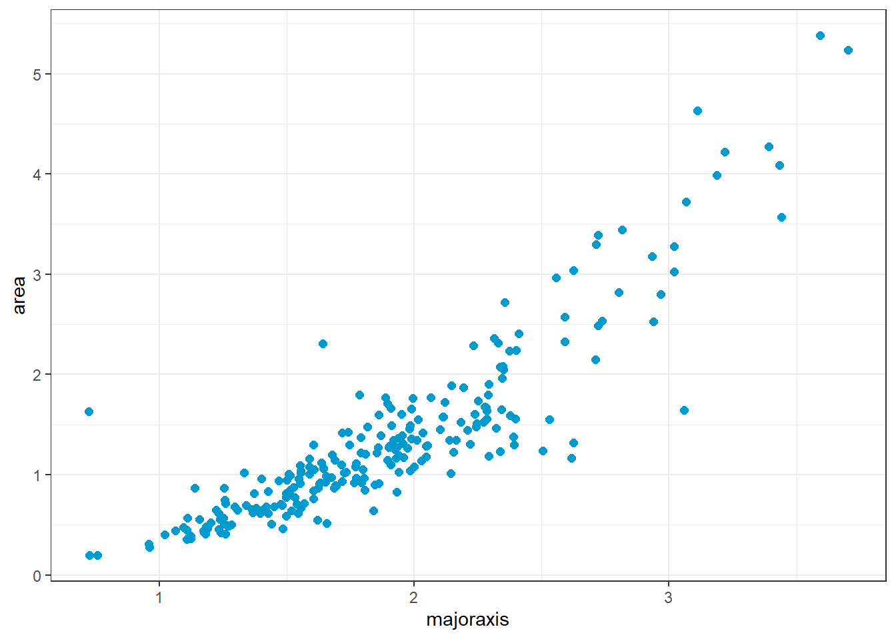
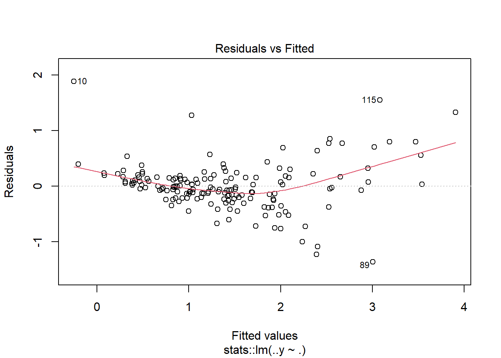
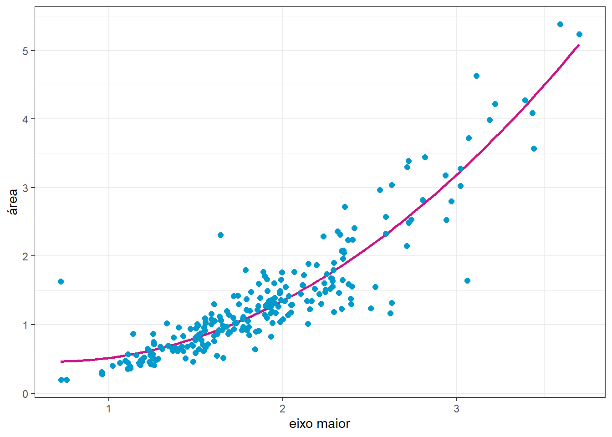
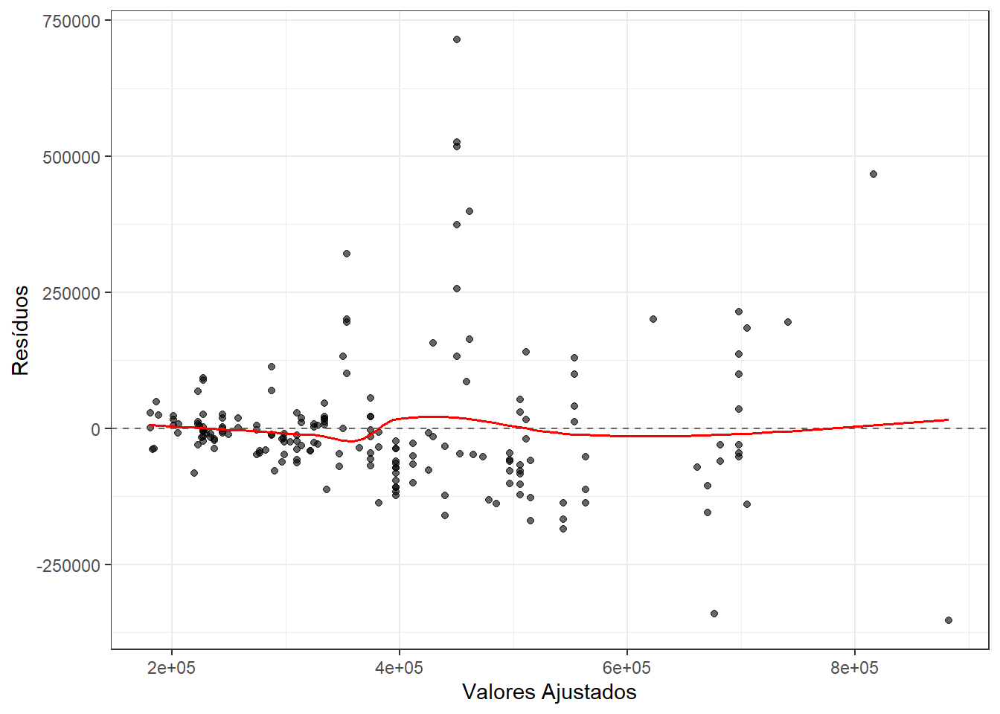

2 Regressão linear simples, múltipla e polinomial
2.1 Regressão linear simples
Seja um problema onde deseja-se prever uma resposta contínua, \(y \in \mathbb{R}\), em função de um preditor também contínuo, \(x \in \mathbb{R}\). Supõe-se a disponibilidade de dados para bem descrever tal problema, o que desperta interesse na obtenção de um modelo apropriado. Sejam tais dados denotados por \((x_1,y_1), (x_2,y_2), \dots, (x_n,y_n)\). Para cada observação da resposta de interesse, \(y_i\), existe uma observação do preditor, \(x_i\), \(i=1,\dots,n\). Portanto, supõe-se Conforme a Figura 3.1, onde observam-se dados do preço de carros Honda Fit em função do ano de fabricação, parece razoável considerar a aproximação por uma função linear.
Tal aproximação pode ser descrita pela Equação à seguir, onde \(\hat{y}\) consiste no valor predito de \(y\), \(\beta_0\) e \(\beta_1\) são coeficientes chamados de intercepto ou constante e coeficiente linear ou inclinação, respectivamente. Enquanto \(\beta_0\) mede o valor da resposta prevista para \(x=0\), \(\beta_1\) consiste na mudança média da resposta para o incremento de uma unidade no preditor, \(x\), ou seja, para o exemplo, o acréscimo no preço de revenda para a adição de uma unidade no ano de fabricação.
\[ \hat{y}_i = \beta_0 + \beta_1x_i \]
A Figura 2.2 plota o modelo de regressão linear simples obtido juntamente com os dados de treino.

Para este caso inicial, os coeficientes de regressão estimados são, \(\beta_0 = -8024077\) e \(\beta_1\) = 4015, sendo o modelo escrito conforme Equação 2.1, onde \(\hat y\) seria o preço previsto.
\[ \hat y = -8024077 + 4015x \tag{2.1}\]
A primeira pergunta a ser feita seria como estimar tais coeficientes de regressão. Pode-se pensar em estimativas que minimizem o erro de previsão. Conforme, plotado na Figura 2.3 em linhas verticais vermelhas, o erro de previsão seria a diferença entre o valor experimental e o previsto, \(\varepsilon_i = y_i - \hat{y}_i\), \(i = 1, ...., n\).

Neste sentido, as observações da variável dependente ou resposta podem ser descritas conforme Equação 2.2.
\[ \begin{aligned} y_i = \hat{y}_i + \varepsilon_i \\ y_i = \beta_0 + \beta_1x_i + \varepsilon_i \\ \end{aligned} \tag{2.2}\]
Tomando \(n\) observações retiradas da população de interesse, \((x_1, y_1), (x_2, y_2), ..., (x_n, y_n)\), pode-se pensar em um modelo que minimize os erros de previsão para a amostra disponível. Uma vez que o erro é normalmente distribuído, com média nula, \(\mu_\varepsilon=E(\varepsilon)=0\), e variância \(\sigma_\varepsilon^2\), \(\varepsilon \sim N(0,\sigma_\varepsilon^2)\), pode-se trabalhar a minimização da soma dos quadrados dos erros de previsão, \(\sum_{i=1}^{n}\varepsilon_i^2\).
A Tabela 2.1 expõe algumas das observações para os dados plotados anteriormente, bem como os valores preditos e erros associados.
| Ano | Preço | ŷ | ε |
|---|---|---|---|
| 2019 | 85500 | 81847.32 | 3652.679 |
| 2016 | 73200 | 69802.86 | 3397.143 |
| 2020 | 83900 | 85862.14 | -1962.143 |
| 2019 | 84900 | 81847.32 | 3052.679 |
| 2016 | 74900 | 69802.86 | 5097.143 |
| 2013 | 62900 | 57758.39 | 5141.607 |
A sintaxe anteriormente apresentada pode ser escrita de forma matricial, conforme Equação 2.3, onde \(\mathbf{X}_{[2 \times n]}\) consiste em uma matriz relacionada às observações independentes, com uma coluna de valores unitários associada à \(\beta_0\) e outra com as observações de \(x\), portanto associada a \(\beta_1\). o vetor coluna \(\mathbf{y}_{[n\times1]}\) consiste no vetor de observações da resposta, enquanto \(\mathbf{\varepsilon}_{[n\times1]}\) consiste no vetor de erros ou resíduos de previsão e \(\mathbf{\beta}_{[2\times1]}\) consiste no vetor que contém os dois coeficientes de regressão.
\[ \begin{aligned} \mathbf{y} = \mathbf{X}\mathbf{\beta} + \mathbf{\varepsilon} \end{aligned} \tag{2.3}\]
Tais elementos matriciais podem ser escritos de forma genérica conforme segue.
\[ \mathbf{X} = \begin{bmatrix} 1 & x_{1}\\ 1 & x_{2}\\ \vdots & \vdots \\ 1 & x_{n}\\ \end{bmatrix} = \begin{bmatrix} 1 & 2019\\ 1 & 2016\\ \vdots & \vdots \\ 1 & 2017\\ \end{bmatrix} \]
\[ \mathbf{y} = \begin{bmatrix} y_{1}\\ y_{2}\\ \vdots \\ y_{n}\\ \end{bmatrix} = \begin{bmatrix} 85500\\ 73200\\ \vdots \\ 74500\\ \end{bmatrix} \]
\[ \mathbf{\varepsilon} = \begin{bmatrix} \varepsilon_{1}\\ \varepsilon_{2}\\ \vdots \\ \varepsilon_{n}\\ \end{bmatrix} = \begin{bmatrix} 3652,679\\ 3397,143\\ \vdots \\ 682,3214\\ \end{bmatrix}\text{, e} \\ \]
\[ \mathbf{\beta}^T = \begin{bmatrix} \beta_0 & \beta_1\\ \end{bmatrix} = \begin{bmatrix} -8024077 & 4015 \\ \end{bmatrix} \]
Tomando tal notação, a soma dos quadrados dos erros pode ser descrita como \(\sum_{i=1}^{N}\varepsilon_i^2 = \mathbf{\varepsilon}^T\mathbf{\varepsilon}\). Desenvolvendo tal expressão, tem-se:
\[ \begin{aligned} L(\mathbf{\beta}) = \mathbf{\varepsilon}^T\mathbf{\varepsilon} = (\mathbf{y} - \mathbf{X}\mathbf{\beta})^T(\mathbf{y} - \mathbf{X}\mathbf{\beta}) \\ \mathbf{y}^T\mathbf{y} - 2\mathbf{\beta}^T\mathbf{X}^T\mathbf{y} + \mathbf{\beta}^T\mathbf{X}^T\mathbf{X}\mathbf{\beta} \end{aligned} \]
Para minimizar a perda quadrática, \(L\), em relação à estimativa de \(\mathbf{\beta}\), pode-se diferenciar tal quantidade em relação à \(\mathbf{\beta}\) e igualar a zero:
\[ \begin{aligned} \frac{\partial L}{\partial \mathbf{\beta}} = -2\mathbf{X}^T\mathbf{y} + 2\mathbf{X}^T\mathbf{X}\mathbf{\beta} = 0 \\ \hat{\mathbf{\beta}} = (\mathbf{X}^T\mathbf{X})^{-1}(\mathbf{X}^T\mathbf{y}) \end{aligned} \tag{2.4}\]
A solução exposta na Equação 2.4 constitui as chamadas equações normais de mínimos quadrados.
Ao se obter um modelo de regressão por mínimos quadrados, é importante avaliar os resíduos, os quais devem ser normalmente distribuídos, independentes e homocedásticos. Tais pressuposições implicam que o modelo obtido por mínimos quadrados é paramétrico, uma vez que pressupõe-se uma distribuição para os resíduos. A Figura 2.4 expõe alguns gráficos dos resíduos do modelo obtido, os quais podem servir para avaliação da normalidade do modelo, homocedasticidade, bem como para identificação de observações não usuais.

Nota
Neste curso de aprendizado supervisionado, serão estudados diversos métodos que não implicam qualquer distribuição acerca dos resíduos ou dados sendo, portanto, livres de distribuição e ditos não-paramétricos. Portanto, será dada mais ênfase em previsão e interpretação e menos em pressuposições.
2.1.1 Métricas de ajuste para regressão
Definição
O ajuste de um modelo consiste em sua capacidade de generalização ou, em outras palavras, seu desempenho para realizar previsões próximas dos resultados reais.
Sejam dados separados para avaliar o ajuste do modelo, ditos dados de teste, \((x_{n+1},y_{n+1}), (x_{n+2},y_{n+2}),\dots, (x_m,y_m)\), \(m\geq n\).
Nota
Os dados de treinamento, isto é, aqueles usados para estimar o modelo, são aqui denotados por \((x_1,y_1), (x_2,y_2), \dots, (x_n,y_n)\), enquanto os dados de teste, isto é, aqueles usados para medir a capacidade de generalização do modelo, são aqui denotados por \((x_{n+1},y_{n+1}), (x_{n+2},y_{n+2}),\dots, (x_m,y_m)\), \(m\geq n\). Considerando um conjunto de dados de teste, \(i=n+1,...,m\), contendo observações distintas das consideradas para treino, \(i=1,...,n\), isto é, \([(\mathbf x_{n+1},y_{n+1}),(\mathbf x_{n+2},y_{n+2}),...,(\mathbf x_m,y_m)] \neq [(\mathbf x_1,y_1),(\mathbf x_2,y_2),...,(\mathbf x_n,y_n)]\), sugere-se calcular as métricas de ajuste para os dados de teste, de forma a avaliar melhor a capacidade de generalização do modelo.
Uma forma de medir o ajuste do modelo obtido aos dados seria a partir do cálculo do coeficiente de determinação múltipla, \(R^2\), conforme Equação 2.5. O \(R^2\) consiste na proporção da variabilidade dos dados explicados pelo modelo. Quanto maior é o valor de \(R^2\) para os dados de teste, maior a capacidade de generalização do modelo.
\[ \begin{align} R^2 = 1- \frac{\sum_{i=n+1}^{m}(y_i-\hat{y}_i)^2}{\sum_{i=n+1}^{m}(y_i-\overline{y})^2}, \end{align} \tag{2.5}\]
Se o modelo for pior do que um modelo simples que prevê a média, \(\hat{y} = \overline{y}\), o \(R^2\) pode ser negativo. Isso ocorre porque o denominador, que representa a variabilidade total da resposta, pode ser menor do que o numerador, que expressa a soma dos quadrados dos erros do modelo. Essa situação pode ocorrer na validação cruzada, quando considerados dados de teste.
Definição
A validação cruzada consiste justamente de abordagens realizadas para avaliar a capacidade de generalização do modelo. Engloba técnicas de separação dos dados para treinamento e teste dos modelos. A abordagem de separação de dados de treino e teste é a mais simples. Técnicas mais robustas serão explicitadas no capítulo 6.
A raiz do erro quadrático médio (root mean square error - RMSE), caculada segundo a Equação 2.6 consiste na raiz da média dos quadrados dos erros de previsão de teste. O RMSE tem a mesma unidade da resposta em estudo, porém é mais impactado por outliers, demonstrando a influência destes no erro de previsão. Esta métrica é uma boa opção quando deseja-se mensurar o erro na mesma unidade da resposta.
\[ RMSE (y,\hat{y}) = \sqrt{\frac{1}{m} \sum_{i=n+1}^{m}{(y_i - \hat{y}_i)}^2} \tag{2.6}\]
O erro médio absoluto (mean absolute error - MAE), calculado segundo a Equação 2.7, mede a média dos valores absolutos das diferenças entre o valor real e o valor predito. Essa métrica é mais robusta a outliers e também mede o erro na mesma unidade de medida da resposta.
\[ MAE (y,\hat{y}) = \frac{1}{m} \sum_{i=n+1}^{m}\left|y_i - \hat{y}_i\right| \tag{2.7}\]
2.2 Regressão linear múltipla
No caso onde há múltiplas variáveis independentes ou regressoras de interesse, \(x_1, x_2, ..., x_k\), pode-se considerar o modelo com um coeficiente linear associado a cada variável, conforme Equação 2.8.
\[ \hat{y}_i = \beta_0 + \beta_1x_{i1} + \beta_2x_{i2} + \cdots + \beta_kx_{ik} = \beta_0 + \sum_{j=1}^{k}\beta_jx_{ij}, \tag{2.8}\]
ou de forma matricial segundo a Equação 2.9, com \(\mathbf{X}_{[n\times (k+1)]}\) e \(\mathbf{\beta}_{[(k+1) \times 1]}\):
\[ \begin{aligned} \hat{\mathbf{y}} = \mathbf{X}\mathbf{\beta} \end{aligned}, \tag{2.9}\]
com:
\[ \mathbf{X} = \begin{bmatrix} 1 & x_{11} & x_{12} & \cdots & x_{1k}\\ 1 & x_{21} & x_{22} & \cdots & x_{2k} \\ \vdots & \vdots & \vdots & \ddots & \vdots\\ 1 & x_{n1} & x_{n2} & \cdots & x_{nk} \\ \end{bmatrix}, e\\ \]
\[ \mathbf{\beta}^T = \begin{bmatrix} \beta_0 & \beta_1 & \cdots & \beta_k\\ \end{bmatrix}. \\ \]
As estimativas de mínimos quadrados, deduzidas para o caso simples, \(\hat{\mathbf{\beta}} = (\mathbf{X}^T\mathbf{X})^{-1}(\mathbf{X}^T\mathbf{y})\), também atendem ao caso múltiplo.
O teste t para os coeficientes de regressão pode ser realizado para medir a significância de cada coeficiente e testar as seguintes hipóteses. Ao se rejeitar a hipótese nula, considera-se que o coeficiente apresenta significância estatística para explicar a variação da resposta.
\[ \begin{align} H_0:& \beta_j = 0 \\ H_1:& \beta_j \neq 0, j = 1, ..., k\\ \end{align} \]
O teste é calculado conforme Equação 2.10, onde \(C_j\) é o valor na matriz \((\mathbf{X}^T\mathbf{X})^{-1}\), na \(j\)-ésima linha e na \(j\)-ésima coluna, correspondente à \(\beta_j\). A hipótese nula é rejeitada se \(t_{0j} > t_{[\alpha/2,N-k]}\), onde \(\alpha\) é o nível de significância de interesse.
\[ t_{0j} = \frac{\hat{\beta}_j}{\sqrt{C_jSS_E/(N-k)}} \tag{2.10}\]
Analogamente, estimativas intervalares para os coeficientes podem ser obtidas conforme Equação 2.11, as quais consistem em intervalos que garantem \(\gamma = 1-\alpha\) de confiança de encontrar os verdadeiros valores dos coeficientes de regressão.
\[ \hat{\beta}_j \pm t_{[\alpha/2,N-k]}\sqrt{C_jSS_E/(N-k)} \tag{2.11}\]
A Figura 2.5 ilustra graficamente um modelo de regressão linear múltipla para prever o preço de carros Honda Fit usados em função do ano de fabricação e quilometragem.

O modelo pode ser escrito segundo a Equação 2.12, onde \(x_1\) consiste no Ano de fabricação e \(x_2\) na quilometragem. Portanto, quanto maior o ano e menor a quilometragem, maior o preço estimado. Os coeficientes foram estimados nas unidades originais das variáveis. Porém, para fins de inferência, é importante padronizar as variáveis regressoras.
\[ \hat{y} = -7,560\times 10^6 +3,788\times 10^3x_1 -6,789\times 10^{-2}x_2 \tag{2.12}\]
O teste t para os coeficientes de regressão é apresentado na Tabela 2.2. As duas variáveis regressoras foram antes normalizadas, conforme Equação 2.13, onde \(\mu_j\) é a média e \(\sigma_j\) o desvio-padrão de \(x_j\). Ao realizar tal normalização para todas as variáveis, \(j=1,...,k\), \(x_{j,norm}\) terá média nula e desvio-padrão unitário, evitando efeito de escala e de unidade de medida na inferência. Devido à normalização, os coeficientes apresentados na Tabela, diferem dos apresentados na Equação 2.12. Como, \(|t_{\alpha/2,N-k}|\) = 2,2, apenas o intercepto e o coeficiente relacionado ao Ano são significativos, uma vez que \(t_{0j} > t_{\alpha/2,N-k}\), \(\forall j = 1, ..., k\).
\[ x_{j,norm} = \frac{x_j-\mu_j}{\sigma_j} \tag{2.13}\]
Nota
Há métodos que não necessitam de normalização dos preditores, uma vez que a escala destes não influencia na modelagem. Estes serão explicitados no momento oportuno.
| term | estimate | std.error | statistic | p.value |
|---|---|---|---|---|
| (Intercept) | 64,861.54 | 1,326.61 | 48.89 | 0.00 |
| Ano | 14,352.60 | 1,489.73 | 9.63 | 0.00 |
| Km | −2,293.21 | 1,489.73 | −1.54 | 0.15 |
Ainda em relação à interpretação do teste t, exposto na Tabela 2.2, pode-se também considerar o p-valor (p-value) que é a probabilidade de erro na rejeição da hipótese nula, \(H_0\), associada ao valor calculado \(t_0\). Se \(p-value < \alpha\), onde \(\alpha\) é o nível de significância adotado, rejeita-se \(H_0\).
Importante
O p-valor não é a probabilidade de \(H_0\) ser verdadeira, nem a probabilidade de os dados terem ocorrido por acaso. Ele representa a probabilidade de se obter um resultado tão ou mais extremo que o observado, assumindo \(H_0\) verdadeira. Um p-valor significativo (\(p < \alpha\)) não implica relevância prática - apenas indica evidência estatística contra \(H_0\). O efeito e o contexto do problema devem sempre ser considerados na interpretação.
A Tabela 2.3 apresenta os intervalos de confiança de 0,95 para os coeficientes codificados.
| term | estimate | conf.low | conf.high |
|---|---|---|---|
| (Intercept) | 64,861.54 | 61,905.67 | 67,817.41 |
| Ano | 14,352.60 | 11,033.27 | 17,671.93 |
| Km | −2,293.21 | −5,612.54 | 1,026.11 |
Além de considerar termos de múltiplas variáveis, é possível considerar a interação entre estas, colocando na matriz \(\mathbf{X}\) colunas com multiplicação ou produto das variáveis de interesse e no modelo termos da forma \(\beta_{ij}x_ix_j\). Para o caso em estudo um modelo de regressão múltipla com interação é apresentado na Tabela 2.4.
| term | estimate | std.error | statistic | p.value |
|---|---|---|---|---|
| (Intercept) | 63,897.96 | 1,577.41 | 40.51 | 0.00 |
| Ano | 15,290.21 | 1,702.16 | 8.98 | 0.00 |
| Km | −3,085.91 | 1,640.34 | −1.88 | 0.09 |
| Ano_x_Km | −2,780.76 | 2,524.31 | −1.10 | 0.30 |
Importante
É importante esclarecer que, no caso de modelos de regressão múltipla com termos de interação, a matriz \(\mathbf{X}\) apresentará mais que \(k+1\) colunas, sendo adicionadas as colunas das respectivas interações, como sendo o produto das colunas das variáveis envolvidas em cada termo adicionado.
2.2.1 Codificação de variáveis categóricas em regressão múltipla
Ainda considerando o problema de regressão do preço de revenda de carros considerando o ano e a quilometragem, seja o caso onde deseja-se considerar uma terceira variável regressora que determina o modelo ou tipo do veículo. Portanto, além do Honda Fit, consideremos também os modelos Toyota Corolla e Chevrolet Onix. A Tabela 2.5 expõe algumas observações do conjunto de dados.
| Carro | Ano | Km | Preco |
|---|---|---|---|
| COROLLA | 2014 | 225540 | 61900 |
| COROLLA | 2023 | 64000 | 143900 |
| FIT | 2013 | 164000 | 54900 |
| FIT | 2009 | 222860 | 39900 |
| ONIX | 2020 | 90000 | 69990 |
| ONIX | 2024 | 17223 | 103590 |
Os modelos de regressão múltipla estimados via mínimos quadrados, assim como outros diversos métodos, só aceitam preditores quantitativos. Para trabalhar com a variável modelo e qualquer outra variável nominal em regressão múltipla, pode-se utilizar de codificação binária ou dicotômica. No caso de três categorias, como no exemplo acima, duas variáveis binárias são suficientes. Cria-se uma coluna denominada Fit, com 1, se Carro == Fit e 0, caso contrário e, de forma análoga, uma coluna para o modelo Onix. Caso uma determinada observação receba 0 em ambas colunas, o modelo do carro seria naturalmente Onix.
Seja \(x_1\) o ano e \(x_2\) a quiometragem, então:
\[ x_3 = \bigg\{ \begin{matrix} 1, \text{ se Carro == Fit} \\ 0, \text{ cc}\\ \end{matrix} \] e
\[ x_4 = \bigg\{ \begin{matrix} 1, \text{ se Carro == Onix} \\ 0, \text{ cc}\\ \end{matrix} \]
O modelo de regressão pode ser escrito conforme Equação 2.14.
\[ \hat{y}_i = \beta_0 + \beta_1x_{i1} + \beta_2x_{i2} + \beta_3x_{i3} + \beta_4x_{i4} \tag{2.14}\]
Fica claro que, neste tipo de modelo, o coeficiente \(\beta_3\) é uma constante adicionada a \(\beta_0\) caso o modelo do carro seja Fit. O mesmo pode ser dito de \(\beta_4\) para o caso Onix. Portanto, tais termos não mudam a inclinação do modelo, apenas o intercepto. Logo, \(\beta_0\) seria a constante para o modelo Corolla. É possível adicionar termos de interação entre variáveis dicotômicas e variáveis contínuas, o que na prática serviria para mudar a inclinação ou coeficientes das variáveis contínuas. Retomando a criação de variáveis dicotômicas para o exemplo em questão, tem-se as colunas com tais variáveis criadas na Tabela 2.6.
| Ano | Km | Preco | Carro_FIT | Carro_ONIX |
|---|---|---|---|---|
| 2014 | 225540 | 61900 | 0 | 0 |
| 2023 | 64000 | 143900 | 0 | 0 |
| 2013 | 164000 | 54900 | 1 | 0 |
| 2009 | 222860 | 39900 | 1 | 0 |
| 2020 | 90000 | 69990 | 0 | 1 |
| 2024 | 17223 | 103590 | 0 | 1 |
O modelo com estas variáveis é apresentado na Tabela 2.7.
| term | estimate | std.error | statistic | p.value |
|---|---|---|---|---|
| (Intercept) | 114,259.29 | 3,986.87 | 28.66 | 0.00 |
| Ano | 10,188.44 | 4,967.51 | 2.05 | 0.05 |
| Km | −11,656.32 | 4,766.52 | −2.45 | 0.02 |
| Carro_FIT | −34,178.56 | 6,537.86 | −5.23 | 0.00 |
| Carro_ONIX | −55,226.00 | 5,817.23 | −9.49 | 0.00 |
2.3 Regressão polinomial
Em regressão simples ou múltipla, é possível realizar transformações nos preditores, de forma a incluir termos polinomiais associados à uma ou mais variáveis independentes. Para o caso simples, um modelo de regressão polinomial pode ser escrito conforme segue, onde \(p\) é a ordem do modelo de regressão.
\[ \hat{y} = \beta_0 + \beta_1x + \beta_2x^2 + \beta_3x^3 + ... \beta_px^p \]
Nota
O modelo de regressão polinomial continua sendo dito linear, pois apresenta linearidade nos parâmetros, isto é, nos coeficientes.
Considerando-se a notação matricial, a matriz \(\mathbf{X}\) fica conforme segue, podendo-se utilizar novamente as equações normais de mínimos quadrados para estimar os coeficientes, \(\hat{\mathbf{\beta}} = (\mathbf{X}^T\mathbf{X})^{-1}(\mathbf{X}^T\mathbf{y})\).
\[ \mathbf{X} = \begin{bmatrix} 1 & x_{1} & x_{1}^2 & \cdots & x_{1}^p\\ 1 & x_{2} & x_{2}^2 & \cdots & x_{2}^p \\ \vdots & \vdots & \vdots & \ddots & \vdots\\ 1 & x_{n} & x_{n}^2 & \cdots & x_{n}^p \\ \end{bmatrix}\\ \]
Sejam os dados da área de folhas de árvores frutíferas em função do comprimento do eixo maior, conforme Figura 2.6.

Considerando-se um modelo linear para tais dados, os resíduos obtidos são plotados na Figura 2.7. Pode-se observar claramente um padrão de não linearidade nos resíduos em relação aos valores ajustados, indicando o ajuste de um modelo não linear.

Pode-se pensar, portanto, em um modelo de regressão quadrático para aproximar a área da folha em função do comprimento. A curva plotada na Figura 2.8 consiste em tal modelo.

O modelo quadrático obtido e associado ao gráfico anterior é exposto na Tabela 2.8.
| term | estimate | std.error | statistic | p.value |
|---|---|---|---|---|
| (Intercept) | 1.40 | 0.03 | 47.55 | 0.00 |
| majoraxis_poly_1 | 10.14 | 0.38 | 26.98 | 0.00 |
| majoraxis_poly_2 | 2.67 | 0.38 | 7.10 | 0.00 |
Os resíduos para o modelo quadrático são plotados na Figura 2.9.

Finalmente, o modelo quadrático é escrito na Equação 2.15.
\[ \hat{y} = 1,40 +10,14x + 2,67x^2 \tag{2.15}\]
2.4 Implementações em R
A seguir serão expostas as implementações necessárias para obter os resultados do capítulo. A implementação para obtenção de um modelo de regressão linear simples já foi realizada no Capítulo 1.
2.4.1 Regressão linear múltipla
Carregando pacotes para dados, modelagem e gráficos.
library(sjdatar)
library(ggplot2)
library(dplyr)
library(tidymodels)
library(GGally)Carregando dados de preço, ano e quilometragem de carros Honda Fit usados. Neste caso, usamos o conjunto de dados carrosusados2025webmotors. Porém, tal conjunto de dados contém outros modelos e outras variáveis. Então, filtramos a coluna Carro apenas para FIT e selecionamos com select apenas as colunas de interesse.
data(carrosusados2025webmotors)
dados <- carrosusados2025webmotors |>
filter(Carro == "FIT") |>
select(Preco, Ano, Km)O comando ggpairs do pacote GGally é útil para visualizar a correlação entre as respostas e os preditores, bem como a distribuição das variáveis, anteriormente à estimativa do modelo, de forma a avaliar quais variáveis incluir no modelo.
ggpairs(dados) +
theme_bw()Separando dados de treino e teste.
set.seed(36)
dados_split <- initial_split(dados, prop = 0.60)
# dados_split
dados_treino <- training(dados_split)
dados_teste <- testing(dados_split)
dados_treino |> head()No capítulo 1 não utilizamos uma receita. Porém, esta abordagem é recomendada, uma vez que viabilizará o pré-processamento e tratamento dos preditores. A receita, definida com o comando recipe do pacote recipes, incluído no ecosistema tidymodels, inclui a fórmula e os dados. O comando step_normalize faz a normalização dos preditores, segundo Equação 2.13. Há diversos comandos que começam com step, os quais serão úteis neste curso para engenharia de atributos.
receita <- recipe(formula = Preco ~ Ano + Km, data = dados_treino) |>
step_normalize(all_numeric_predictors())Definição do modelo.
lm_model <-
linear_reg(penalty = 0) |>
set_engine("lm")Definindo o workflow, o qual agrega informações necessárias à modelagem. A receita e o modelo anteriormente criados são adicionados com add_recipe e add_model, respectivamente.
lm_workflow <-
workflow() |>
add_recipe(receita) |>
add_model(lm_model)Estimando o modelo. É importante diferenciar a estimativa do modelo com fit da definição do tipo de modelo a ser usado para tal com linear_reg, neste caso.
lm_form_fit2 <-
lm_workflow |>
fit(data = dados_treino)lm_form_fit2 |>
extract_fit_parsnip() |>
tidy()Realizando previsões com os dados de teste. O comando bind_cols é útil para juntar as previsões aos dados de teste.
pred_teste <- predict(lm_form_fit2, new_data = dados_teste) |>
bind_cols(dados_teste)
pred_testeFinalmente, as métricas de ajuste para os dados de teste são calculadas usando o comando metrics do pacote yardstick.
metricas <- pred_teste |>
metrics(truth = Preco, estimate = .pred)
metricas2.4.2 Regressão múltipla com termos de interação
Neste caso, deve-se definir uma nova receita com um novo tratamento para gerar os termos de interação, com step_interact. Opcionalmente, o comando prep serve para que receitas com no mínimo um pré-processamento (step), possa ser depois usada para outros conjuntos de dados, enquanto o comando bake aplica tal pré-processamento aos novos dados. Porém, quando considera-se new_data = NULL, o bake serve para visualizar o conjunto de dados de treino após a engenharia de atributos, neste exemplo após a normalização e após a criação da coluna de interação.
receita2 <- recipe(Preco ~ Ano+Km, data = dados_treino) |>
step_normalize(all_numeric_predictors()) |>
step_interact(terms = ~ Ano:Km)
receita2_prep <- prep(receita2)
dados_int_bake <- bake(receita2_prep, new_data = NULL)
dados_int_bake |> head()Os passos seguintes são análogos ao realizado para regressão múltipla, sendo definido o workflow, realizado o treinamento e, em seguida, a exibição do modelo.
lm_workflow2 <-
workflow() |>
add_recipe(receita2) |>
add_model(lm_model)
lm_form_fit3 <-
lm_workflow2 |>
fit(data = dados_treino)
lm_form_fit3 |>
extract_fit_parsnip() |>
tidy()2.4.3 Regressão múltipla com variáveis categóricas
O conjunto de dados carrosusados2025webmotors contém outros modelos de veículos. Porém, para este exemplo, serão considerados apenas COROLLA, FIT e ONIX. O comando step_dummy é utilizado para codificação binária. Caso haja duas ou mais variáveis categóricas a serem codificadas de forma binária, pode-se usar all_nominal_predictors() em step_dummy.
dados2 <- carrosusados2025webmotors |>
filter(Carro %in% c("COROLLA", "FIT", "ONIX"))
set.seed(36)
dados_split2 <- initial_split(dados2, prop = 0.60)
# dados_split
dados_treino2 <- training(dados_split2)
dados_teste2 <- testing(dados_split2)
receita3 <- recipe(Preco ~ Ano+Km+Carro, data = dados_treino2) |>
step_normalize(all_numeric_predictors()) |>
step_dummy(Carro)
receita3_prep <- prep(receita3)
dados2_bake <- bake(receita3_prep, new_data = NULL)
dados2_bake |> head()lm_workflow3 <-
workflow() |>
add_recipe(receita3) |>
add_model(lm_model)
lm_form_fit4 <-
lm_workflow3 |>
fit(data = dados_treino2)
lm_form_fit4 |>
extract_fit_parsnip() |>
tidy()2.4.4 Regressão polinomial
O conjunto de dados folhasfrutas do pacote sjdatar inclui medições de folhas de árvores frutíferas distintas. Tais medições foram realizadas por análise de imagem.
data(folhasfrutas)
set.seed(36)
folhas_split <- initial_split(folhasfrutas, prop = 0.70)
# folhas_split
folhas_treino <- training(folhas_split)
folhas_teste <- testing(folhas_split)Inicialmente, realiza-se a aproximação de um modelo de regressão linear simples para prever a área das folhas em função da dimensão do eixo maior (majoraxis).
lm_model <-
linear_reg(penalty = 0) |>
set_engine("lm")
receita_area <- recipe(area ~ majoraxis, data = folhas_treino) # |>
# step_normalize(majoraxis)
area_workflow <-
workflow() |>
add_recipe(receita_area) |>
add_model(lm_model)
area_fit <-
area_workflow |>
fit(data = folhas_treino)
area_fit |>
extract_fit_parsnip() |>
tidy()
ggplot(folhasfrutas,
aes(x=majoraxis, y=area)) +
geom_smooth(method = "lm", formula = y ~ x, se = F, col = "mediumvioletred") +
geom_point(color = "deepskyblue3", size = 2) +
theme_bw()A seguir, realiza-se a aproximação de um modelo de regressão quadrática. Para tal, usa-se o pré-processamento step_poly com o argumento degree = 2.
receita_area2 <- recipe(area ~ majoraxis, data = folhas_treino) |>
# step_normalize(majoraxis) |>
step_poly(majoraxis, degree = 2)
area_workflow2 <-
workflow() |>
add_recipe(receita_area2) |>
add_model(lm_model)
area_fit2 <-
area_workflow2 |>
fit(data = folhas_treino)
area_fit2 |>
extract_fit_parsnip() |>
tidy()
ggplot(folhasfrutas,
aes(x=majoraxis, y=area)) +
geom_smooth(method = "lm", formula = y ~ x + I(x^2), se = F, col = "mediumvioletred") +
geom_point(color = "deepskyblue3", size = 2) +
theme_bw()Referências
Hastie, T., Tibshirani, R., Friedman, J. H., & Friedman, J. H. (2009). The elements of statistical learning: data mining, inference, and prediction (Vol. 2, pp. 1-758). New York: springer.
Gareth, J., Daniela, W., Trevor, H., & Robert, T. (2013). An introduction to statistical learning: with applications in R. Spinger.
KUHN, Max; SILGE, Julia. Tidy modeling with R: A framework for modeling in the tidyverse. ” O’Reilly Media, Inc.”, 2022.
2.5 Exercícios
Na implementação realizada no item Seção 2.4.2, para regressão múltipla com interação, não foi realizada a avaliação do modelo com os dados de teste. Realize tais previsões e estime as métricas de ajuste. Este modelo é melhor que o modelo obtido na implementação da Seção 2.4.1?
Na implementação realizada no item Seção 2.4.3, para regressão múltipla com variáveis categóricas, não foi realizada a avaliação do modelo com os dados de teste. Realize tais previsões e estime as métricas de ajuste.
Considerando o problema de previsão de preços de carros, compare os resultados de ajuste de teste para o caso de regressão múltipla considerando o ano e a quilometragem e regressão múltipla considerando a interação entre tais variáveis.
O conjunto de dados
carrosusados2025webmotorscontém outras variáveis ainda não exploradas, a saber: Marca, Carro, Ano, Km, Cambio, Motor, Valvulas e Combustivel. Ademais, há outros modelos de veículos ainda não explorados. Primeiro abra o conjunto de dados e estude tais variáveis. QUais você sugere acrescentar ao modelo? Quais talvez não sejam importantes?Ainda em relação ao conjunto de dados
carrosusados2025webmotors, qual tipo de pré-processamento você sugere para cada novo preditor a ser considerado no novo modelo?Realize todos os passos para obter um modelo considerando as novas variáveis do conjunto de dados
carrosusados2025webmotors. Considere 75% dos dados para treinamento. Na receita, sugere-se considerar apenas variáveis que apresentem variação nas colunas, ou então considerar todas e usarstep_zvao final da receita para remover variáveis com valor único. Avalie o ajuste do modelo aos dados de teste.